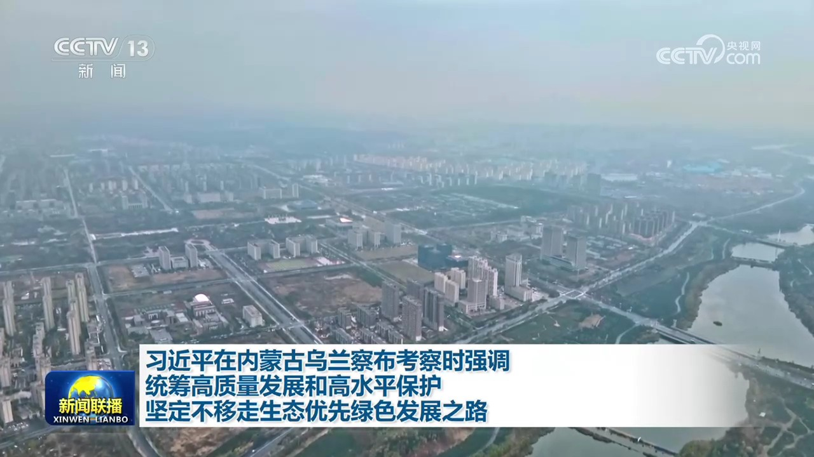
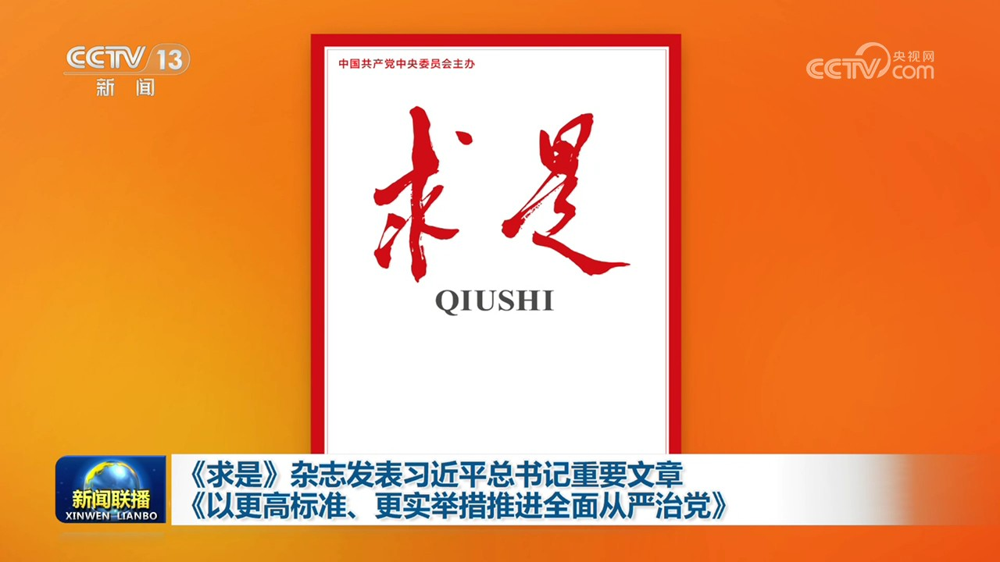
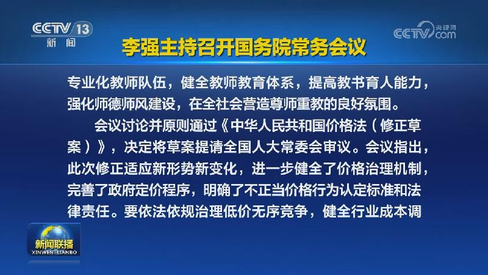
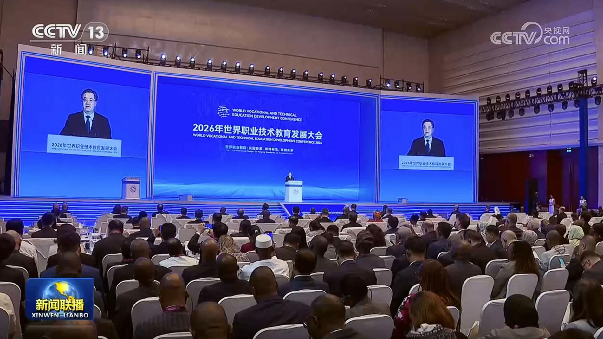
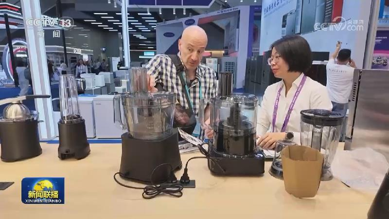
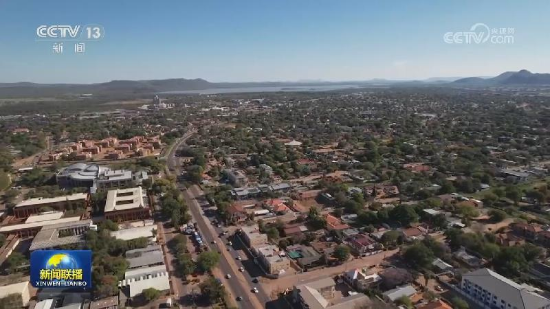
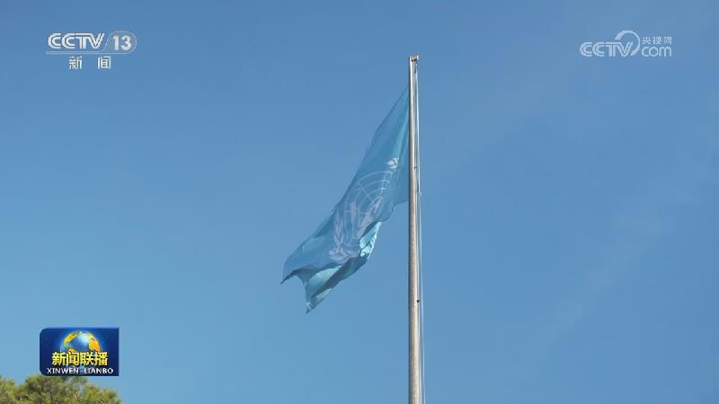
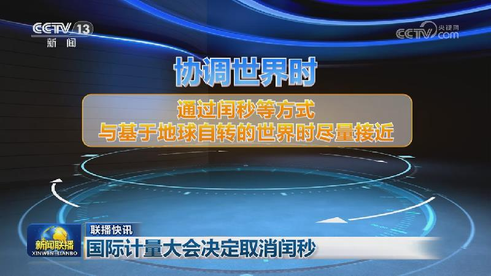

01

习近平在内蒙古乌兰察布考察时强调 统筹高质量发展和高水平保护 坚定不移走生态优先绿色发展之路
中共中央总书记、国家主席、中央军委主席习近平16日在内蒙古自治区乌兰察布市考察时强调，绿色发展是高质量发展的应有之义，要统筹高质量发展和高水平保护，坚持山水林田湖草沙一体化保护和系统治理，协同推进降碳、减污、扩绿、增长，坚定不移走生态优先、绿色发展之路。


中共中央总书记、国家主席、中央军委主席习近平16日在内蒙古自治区乌兰察布市考察时强调，绿色发展是高质量发展的应有之义，要统筹高质量发展和高水平保护，坚持山水林田湖草沙一体化保护和系统治理，协同推进降碳、减污、扩绿、增长，坚定不移走生态优先、绿色发展之路。
本台今天（10月16日）播发央视快评《坚定不移走生态优先绿色发展之路》。

10月16日出版的第20期《求是》杂志发表中共中央总书记、国家主席、中央军委主席习近平的重要文章《以更高标准、更实举措推进全面从严治党》。
中共中央总书记、国家主席、中央军委主席习近平16日致信祝贺湖南大学建校100周年，向全体师生员工和广大校友致以祝贺。

国务院总理李强10月16日主持召开国务院常务会议，听取“人工智能+”行动进展情况汇报，讨论《中华人民共和国教师法（修订草案）》，讨论《中华人民共和国价格法（修正草案）》，审议通过《国务院关于修改和废止部分行政法规的决定（草案）》。

2026年世界职业技术教育发展大会16日在天津开幕，中共中央政治局常委、国务院副总理丁薛祥出席并致辞。
青海是红军长征途经省份之一，红军将士在果洛班玛县玛可河畔行军筹粮，与藏族乡亲结下军民鱼水情。如今，这片雪域高原赓续红色血脉，走出生态优先、绿色发展之路。
由国家发展改革委、民政部、国家卫生健康委三部门联合印发的《关于进一步完善价格形成机制 推动普惠养老服务提质扩面的指导意见》今天（10月16日）对外公布。《指导意见》将养老机构划分为兜底保障型、普惠支持型、完全市场型三类，分类完善养老服务价格形成机制，满足多层次多样化服务需求。发挥价格政策牵引作用，让老年群体享受到价格可负担、质量有保障、运营可持续的普惠养老服务，促进养老服务高质量发展。……

第140届广交会首期展览聚焦先进制造主题，以众多前沿创新展品对接全球供需，充分展现我国制造业加快迈向价值链中高端。
国务院新闻办公室今天（10月16日）举行新闻发布会，商务部有关负责人介绍，第九届中国国际进口博览会将于11月5日至10日在上海举办，162个国家、地区和国际组织参与，4100多家境外企业参展，参展企业数量为历届之最，首次参展的企业超2000家。本届进博会企业展面积首次突破37万平方米，截至目前，全球首发、亚洲首展、中国首秀的代表性展品超过480件，创历年新高。
目前，各地秋粮旺季收购正有序展开，一大批现代化智能粮仓投入使用，保障粮食安全。
国务院新闻办公室今天（10月16日）举行“新征程上的奋斗者”中外记者见面会。5位来自交通运输领域的基层一线代表，围绕“奋进‘十五五’ 勇当开路先锋”主题与中外记者见面交流，分享各自在藏北高原养护天路、技术创新守护三峡船闸、挑战深海极限、在实训台上钻研技能、扎根货运一线服务民生的故事。展现了新时代交通人埋头苦干、担当奉献的奋斗姿态，在平凡中创造的不平凡业绩，为加快建设交通强国贡献力量。

我国研究与试验发展经费总量位居世界第二位
也门政府官员15日称，胡塞武装当天向位于亚丁的也门总统府发射多枚导弹，造成5人死亡、16人受伤，伤亡者包括安保人员和政府工作人员。袭击发生时，也门总理津达尼正在总统府主持内阁会议，目前也门总理和与会的内阁成员都是安全的。胡塞武装随后表示，此次袭击针对的是沙特阿拉伯位于亚丁的军事行动指挥部。

联合国粮食及农业组织15日在意大利罗马举行颁奖典礼，表彰“联合国粮农组织农业粮食体系与农村发展百位巾帼英雄”。共有3位中国女性获得这一表彰，分别是：内蒙古自治区治沙人殷玉珍、中国全国乡村工匠名师余锦秀和湖南省岳阳县丰瑞农机专业合作社理事长董敏芳。

俄方反对日方就涉嫌间谍活动人员的交涉